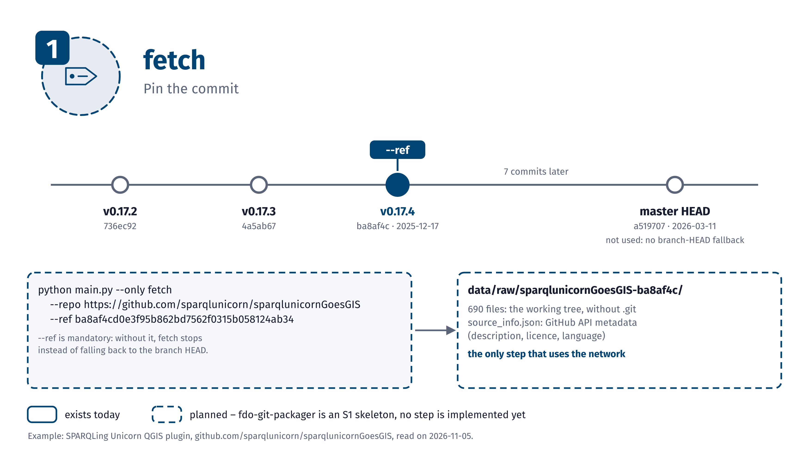
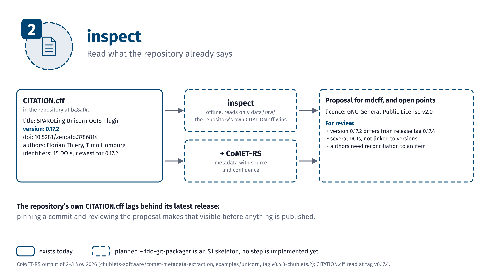
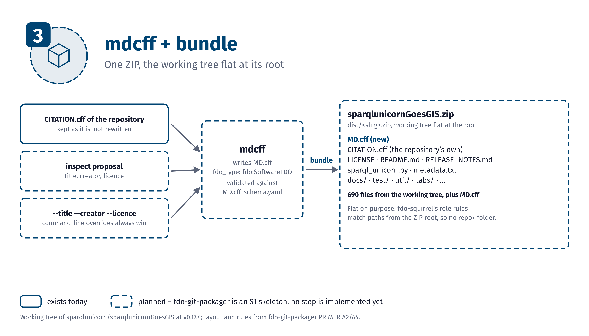
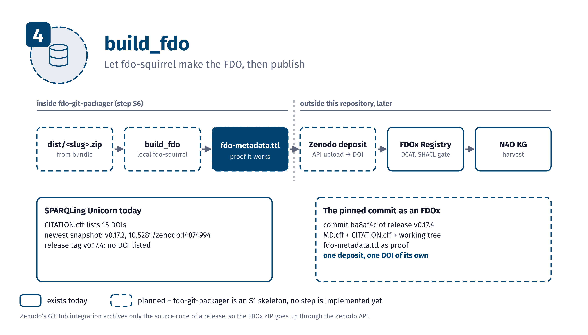
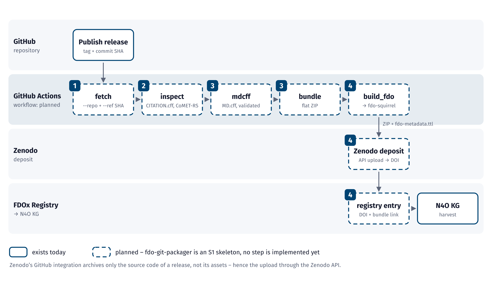

fdo-git-packager: software as FDO
Concept graphics for packaging a Git repository as an FDO (the tool is a skeleton, nothing here is implemented yet).
Concept. fdo-git-packager is a skeleton; these graphics show the planned design. Dashed outlines mark what is planned, solid outlines what exists.
Concept: planned, not implemented yet

GP.1Concept for fdo-git-packager: pin, inspect, package, build and publish. Dashed outlines mark what is planned.
FDOx-squirrel, fdox-visuals (Florian Thiery, LEIZA). Code: MIT licence. Example: SPARQLing Unicorn QGIS plugin, tag v0.17.4 (ba8af4c). fdo-git-packager is a skeleton; no step is implemented yet.

Concept: planned, not implemented yet

GP.2git-packager step 1: pin the commit. A tag is resolved to one commit, so the package can be rebuilt.
FDOx-squirrel, fdox-visuals (Florian Thiery, LEIZA). Code: MIT licence. Example: SPARQLing Unicorn QGIS plugin, tag v0.17.4 (ba8af4c).


Concept: planned, not implemented yet

GP.3git-packager step 2: read what the repository already says about itself, such as its CITATION.cff.
FDOx-squirrel, fdox-visuals (Florian Thiery, LEIZA). Code: MIT licence. Example: SPARQLing Unicorn QGIS plugin, tag v0.17.4 (ba8af4c).


Concept: planned, not implemented yet

GP.4git-packager step 3: one ZIP with the working tree flat at its root; the repository’s own CITATION.cff is kept as it is.
FDOx-squirrel, fdox-visuals (Florian Thiery, LEIZA). Code: MIT licence. Example: SPARQLing Unicorn QGIS plugin, tag v0.17.4 (ba8af4c).


Concept: planned, not implemented yet

GP.5git-packager step 4: let fdo-squirrel build the FDO, then publish it.
FDOx-squirrel, fdox-visuals (Florian Thiery, LEIZA). Code: MIT licence. Example: SPARQLing Unicorn QGIS plugin, tag v0.17.4 (ba8af4c).


Concept: planned, not implemented yet

GP.6Swimlane: what happens on GitHub, in GitHub Actions (planned), at Zenodo and in the FDOx registry and the N4O KG.
FDOx-squirrel, fdox-visuals (Florian Thiery, LEIZA). Code: MIT licence. Example: SPARQLing Unicorn QGIS plugin, tag v0.17.4 (ba8af4c).